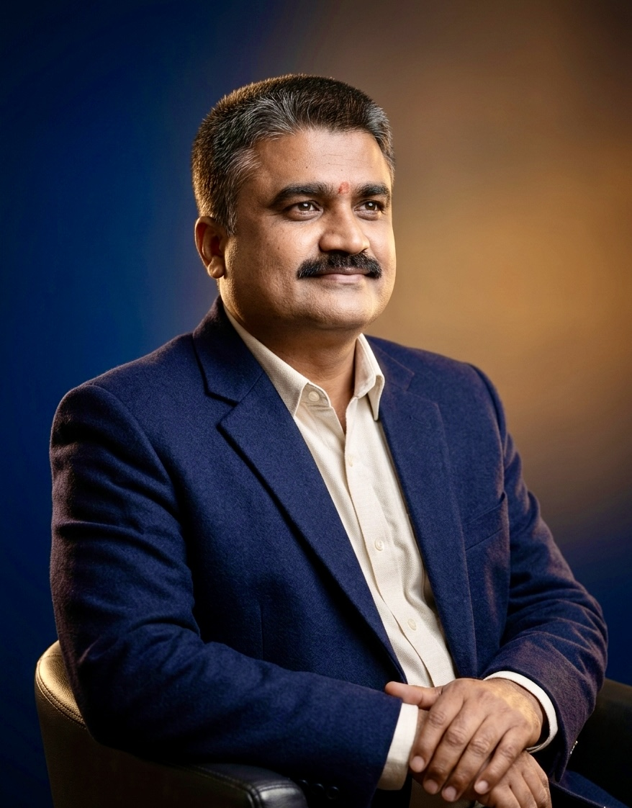

Senior Political Leader
Four Decades of Dedicated Public Service
Federal Election Candidate · Former Provincial Assembly Member · Long-standing Madhesh Representative
Years of Service
Provincial Assembly Member
Member of Parliament
Constituent Assembly Member
MA Degrees
Bharat Prasad Shah is a respected Nepali political figure with more than four decades of public service, deeply rooted in the soil of Mahottari and committed to the development and dignity of Madhesh.
His political journey reflects principled leadership — from early student activism to representing the people of Madhesh in both federal and provincial roles. He has served twice in Nepal’s federal legislature: first as a Member of Parliament in 2006 AD, and later as a Member of the historic Constituent Assembly in 2007 AD, contributing directly to the drafting of Nepal’s new constitution.
He was elected twice to the Madhesh Pradesh Provincial Assembly — first in 2017 AD and again in 2022 AD — serving the people of Mahottari with dedication and integrity. In 2026 AD, he contested the Federal Parliament election from Mahottari— with strong public support, continuing his long-standing commitment to national service.
Currently pursuing MPhil/PhD in Political Science at Tribhuvan University, he continues to combine academic depth with decades of real‑world political experience — a rare blend that shapes his thoughtful and grounded leadership style.
"Development is not a promise — it is a responsibility that begins at the doorstep of every citizen."
Bharat Prasad Shah has contributed to strengthening governance, promoting transparency, and advancing social justice across Madhesh. His leadership reflects a commitment to accountability, dignity, and inclusive development.
Introduced open tender reforms to replace consumer committees, aiming to reduce corruption and increase transparency in development projects. Later policy reversals raised concerns about accountability and transparency.
As Home Minister, facilitated the first official celebration of People's War Day at the provincial level, honoring martyr families, supporting the families of the disappeared, and providing medical and financial aid to injured individuals.
Served as a Member of Parliament (2006 AD) and later as a Member of the historic Constituent Assembly (2007 AD), contributing to Nepal’s constitutional transformation.
Elected twice to the Madhesh Pradesh Provincial Assembly (2017 AD & 2022 AD), advocating for regional development, education, and social equity.
Supported local infrastructure expansion, community empowerment initiatives, and social welfare programs across Mahottari, ensuring long‑term impact at the grassroots level.
Pursuing MPhil/PhD in Political Science, combining academic depth with decades of real‑world political experience to guide informed leadership.
His wife, Dilkumari Shah, served as a PR Member of Parliament (2017 AD), reflecting a shared family commitment to public service.
From student activism to national representation — a lifelong commitment to public service.
Began public life as Vice President of the Red Cross Society school unit in Mahottari. Later served as Secretary of the Free Student Union at the Institute of Forestry, Hetauda Campus (Tribhuvan University).
Elected Chairman of the Village Development Committee, Phulkaha, Mahottari — his first direct mandate from the people, focusing on grassroots development.
Participated in the political transformation movements that reshaped Nepal’s democratic landscape.
Elected to the House of Representatives in 2006 AD and subsequently to the historic Constituent Assembly in 2007 AD — contributing to the drafting of Nepal’s new constitution.
Elected to the Madhesh Pradesh Provincial Assembly from Mahottari Constituency No. 1(2). Worked closely with local communities to strengthen governance and inclusive development.
Re‑elected to the Madhesh Pradesh Provincial Assembly, continuing his commitment to public service and regional development.
Contested the Federal Parliament election from Mahottari— with strong public support, continuing his long-standing commitment to national service.
Participated in the writing of Nepal's new constitution as a Constituent Assembly Member — one of the most historic roles in modern Nepali democracy.
Served as Minister for Home and Communication in Madhesh Pradesh, overseeing law, order, and administrative governance across the province.
Directed the fiscal and economic planning of Madhesh Pradesh as Finance Minister, shaping the provincial budget and development priorities.
Holds dual Master's degrees in Political Science and Maithili from Tribhuvan University, currently pursuing MPhil/PhD — bridging scholarship with statecraft.
Began governance with a direct local mandate as VDC Chairman of Phulkaha, Mahottari — grounding his leadership in community reality.
Twice elected as Parliamentary Party Leader of CPN (Maoist Center) in Madhesh Pradesh, demonstrating sustained confidence from peers and constituents.
Summary of international visits and participation in various programs.
A lifelong commitment to learning — from the schools of Mahottari to Tribhuvan University.
Central Department of Political Science, Tribhuvan University
Tribhuvan University
Tribhuvan University
Ramswarup Ramsagar Multiple Campus, Janakpur — Tribhuvan University
BDBK College, Forbesganj, Bihar, India
Shree Yog Kumar Secondary School, Balwa–Sarpallo, Mahottari
For meetings, political engagements, or public service coordination, please use the contact details below.
Gaushala Nagar Palika,
Ward No. 6, Phulkaha,
Mahottari, Madhesh Pradesh,
Nepal
Nepal's Best and Top Individual Website and App Developer
📍 Yamunamai-1, Rautahat, Madhesh Province, Nepal (हाल: Kyoto, Japan)
🎁 यो वेबसाइट नि:शुल्क सेवाको रूपमा बनाइएको हो।